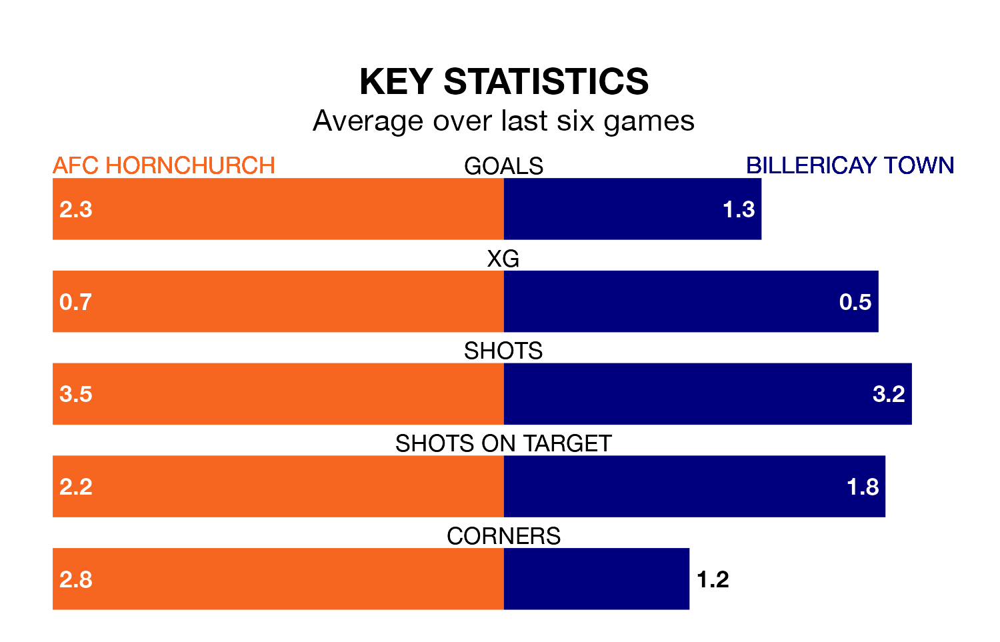

Two of the Isthmian Premier Division's top sides face each other at the Hornchurch Stadium in Saturday's kick-off, when table-topping AFC Hornchurch host fourth-placed Billericay Town.
Hornchurch have picked up 23 wins and seven draws from 31 games so far this season, and sit 21 points above the visitors going into the 3pm match.
Billericay, meanwhile, have won 17 and drawn four of 34, picking up 55 points.
With 76 goals in 31 games so far this season, Hornchurch are the league's highest scorers with 2.5 goals per game. And they are conceding fewer than average, letting in 24 goals at a rate of 0.8 per game.
Billericay, meanwhile, are average scorers, with 1.6 goals per game. They have conceded 1.2 goals per game.
The home side are in exceptional form in the Isthmian Premier Division, with six wins and no losses from their last six games.
With no wins and a draw over that period, Town's form is much worse – they have taken one point from 18, compared to Hornchurch's 18.
In the last three years, Hornchurch and Billericay have played each other on three occasions. Hornchurch won two of them and they drew once.
Their last meeting was on January 16, when they played out a 1-1 draw.
Hornchurch's last match was on March 9, a 2-1 win against Bognor Regis Town.
Billericay drew 1-1 with Hastings United last time out, also on March 9.
Updated: 15:10 (UTC), 15/03/24